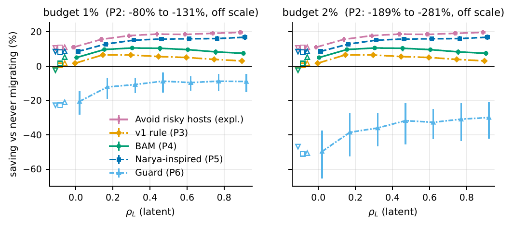

The project explained end to end: the problem, the base papers, the method, the results, the novelty and the limits.
Cloud servers fail. If a provider can see a failure coming, it can live-migrate the virtual machines (VMs) on that server to a healthy one. Moving a VM is not free, though: it uses network bandwidth, causes a brief pause, and capacity for it is limited. So the real decision is which VMs are worth moving.
Microsoft's production systems Narya, NENYA and Deoxys learn which mitigation to take, on private data. This project asks the question they leave open: when does taking the workload into account pay off at all?
The surprise is that the policy the project set out to champion is not the headline. BAM beats the threshold easily, but mostly because the threshold is so poor; against doing nothing it saves about 4–5% in the trace-calibrated regimes. The stronger contribution is the measurement, the theory, the benchmark and the avoidance result.
A provider has a predictor that says, for each host, how likely it is to fail soon. For each VM on a risky host there are two options:
The common rule is a probability threshold: move anything whose failure probability is above a cut-off. It ignores what the VM runs and what the move costs. The alternative is to weigh expected benefit against cost, and to spend a limited migration budget where it does the most good. Whether that alternative actually helps, and when, is what the project tests.
| Narya (OSDI 2020) | NENYA (KDD 2022) | Deoxys (SoCC 2024) | |
|---|---|---|---|
| Where | Azure hosts | Microsoft 365 database copies | Microsoft nodes |
| When it acts | Before failure | Before failure, hourly | After a node turns unhealthy |
| How it decides | A predictor flags a node; A/B tests and a Thompson-sampling bandit choose an action | Cascade reinforcement learning: two layers filter out copies that need nothing, a third picks switch or replace | Causal estimates choose reboot or redeploy, falling back to the old policy when unsure |
| Cost | Counts VM interruptions; VM size is not a decision input | Fixed per action type (switch 1, replace 100) | Downtime, with a withheld cost function |
| Weakness for our question | Private data; its baseline was a fixed action plan, so it never tested against a threshold tuned to a budget | Cost does not depend on what the instance runs; private data | Reactive only; private data; thresholds not published |
All three are real deployed systems. This project does not claim to beat them: it asks a different question, in simulation.
| Narya | NENYA | Deoxys | This work | |
|---|---|---|---|---|
| Per-instance criticality | No | No | Node-level only | Yes, per VM |
| Migration budget in GB | No | No | No | Yes |
| Decision unit | Node | Database copy | Node | VM |
| Theory of when it pays | No | No | No | Closed form |
| Data | Private | Private | Private | Public |
| Rerunnable artifact | None found | None found | None | Yes |
Production systems learn which mitigation to take, on private data; we ask when workload-aware ranking pays off at all, and on public data we measure the condition, derive it in closed form and release a benchmark anyone can rerun.
| # | Claim | Status |
|---|---|---|
| N1 | Criticality and machine risk are essentially uncorrelated in public traces | Holds; say “to our knowledge”, since the literature check was four web searches |
| N2 | Cost spread, not a break-even correlation, drives the gain | Holds for the theory; simulation gets the direction right and under-predicts the level |
| N3 | An open benchmark: public-data worlds, shared GB budget, paired seeds, frozen protocol | Built; release tag and DOI not done |
| N4 | Where new VMs go matters more than which VMs move | Confirmed on fresh seeds in B1 and B2; after the freeze; oracle predictor |
| N5 | A threshold tuned to its budget can be worse than never migrating | Seen in all regimes; preliminary until G3 |
BAM is not a new algorithm: it is Dantzig's density rule with Elkan's cost-sensitive decision. Cost awareness alone is not new, since NENYA and Deoxys have it. Avoidance is not a new idea, since Narya and Protean use it; the new part is isolating and measuring it openly. Nothing here beats a production system.
The project began as a course project (tag v1.0-course), combining 122,618 Backblaze drives and 2,013,767 Azure VMs. It reported a cost-sensitive rule 3.1% behind a threshold under random placement, and 3.4% ahead when criticality tracked risk closely. That suggested a break-even correlation near ρ = 0.3.
v2 re-ran this and traced the loss to how v1 counted, not to cost awareness. The threshold had been given about 8% more migrations (5,522 hosts against 5,116), the two sides were matched on hosts rather than GB, and the accounting windows did not match. With consistent accounting the gap became about +0.2% (docs/v2/v1_anomaly.md). That diagnosis is why v2 exists.
Each stage ends at a written gate, and each gate's rule was set before its data was read. G1 asks where real placement sits. G2 asks whether the simulator can be trusted. The freeze fixes the rules. G3 asks how strong the evidence is.
The failure model predicts per-drive failure from SMART telemetry, split by calendar time so the future never leaks into training.
| Result at a 30-day horizon | Value |
|---|---|
| PR-AUC with v1's features (model, capacity, age) | 0.0018 |
| PR-AUC with SMART features (gradient boosting) | 0.074 |
| ROC-AUC with SMART features | 0.88 |
| Calibration error (ECE) after isotonic calibration | 2.3 × 10⁻⁴ |
The lesson is that the features carry the signal, more than the model class: plain logistic regression matched boosting on the same features. Calibration matters because the decision rule multiplies the probability by a cost. The main benchmark nevertheless uses an oracle predictor, the simulator's true hazard, so that differences between policies come from the policies. Its gains are therefore an upper bound.
For each cell, the project took every placement of a job on a machine and computed Kendall's τ-b between the job's criticality tier and the machine's risk, with bootstrap intervals over machines.
| Cell | Machines | τ-b | 95% interval | Class |
|---|---|---|---|---|
| a | 9,949 | −0.009 | [−0.011, −0.007] | C0, negligible |
| b | 10,023 | 0.003 | [−0.004, 0.010] | C0, negligible |
| h | 11,511 | 0.015 | [0.007, 0.032] | C0, negligible |
Across every mapping and risk proxy tried, |τ-b| stays at or below 0.075. The sign changes with the choice, but the size stays small. Cell f, reported separately, came out at −0.004. G1 was signed off as class C0, and that class is final.
Caveat: risk here is a proxy, the machine platform's rate of long removals, not a measured failure rate, and it rests on few events (79–166 long removals per cell).
vmsim simulates 2,000 hosts with 4 drives each for 365 days plus 30 of warm-up, with VMs arriving and leaving, drives failing, hosts being repaired, and migrations costed with the pre-copy model of Clark et al. A policy may spend a daily migration budget of 0.5, 1, 2 or 5% of cluster memory.
Every run in a seed sees the same failures (common random numbers), so policies can be compared seed by seed, and each world is hashed so it can be verified.
| Regime | What it is | Why |
|---|---|---|
| A1–A7 | Synthetic placement, correlation from 0 to 0.9 | Sweep the correlation |
| E1–E3 | Zero correlation, growing cost spread | Isolate cost spread |
| B1, B2 | Calibrated from the measured Google traces | The realistic case; still simulated |
| C | Critical VMs on the riskiest hosts | Adversarial upper range |
| D | Correlation shifts mid-run, predictor drifts | Non-stationary case |
Gate G2 passed on five criteria: analytic special cases, self-calibration (109 failures seen against 111.9 expected), a v1 regression within 1%, invariants and determinism under property tests, and run time.
| ID | Name | What it does |
|---|---|---|
| P0 | Never migrate | The floor, and the fairest comparison |
| P1 | Fixed threshold | v1's cut-off, for continuity |
| P2 | Tuned threshold | Cut-off tuned on dev seeds to use the budget; the pre-registered comparator |
| P3 | v1 rule | v1's cost-sensitive rule, for continuity |
| P4 | BAM-GB | Ranks VMs by benefit per GB and stops when benefit reaches zero |
| P5 | Narya-inspired | A bandit choosing among doing nothing, migrating and avoiding; not a re-implementation, and every difference is listed |
| P6 | Guard | Uses BAM only when evidence supports it, otherwise P2 |
| P7, P8 | Oracle, random | Ceiling and sanity floor |
| P0+avoid | Avoidance only | Marks the riskiest 2% of hosts each day so they take no new VMs; never migrates. Added after the freeze |
b = p · c · e − m w = GB rank by b / w, fill while b > 0 and budget remains
Here p is the probability the host fails, c the cost of interrupting this VM (its criticality), e the chance a move finishes in time, and m the cost of the move. So b is the expected net benefit of moving it. Ranking by benefit per GB is the textbook way to fill a knapsack.
Φ(z_q + σ_z) − Φ(z_q + σ_x + ρσ_y), σ_z² = σ_x² + 2ρσ_xσ_y + σ_y²
It is never negative, and it vanishes only if costs do not vary (σ_y = 0) or correlation is perfect (ρ = 1). So there is no break-even correlation below which ranking loses; the advantage comes from cost spread. A second term captures what a threshold loses by moving items with negative benefit.
The closed form matched Monte Carlo at 3,024 of 3,024 grid points. The simulator breaks the theory's one-shot assumptions on purpose, so against the simulator only direction is claimed; the level is under-predicted by 7–24 points.
The protocol (docs/v2/PROTOCOL.md) was frozen before the final runs, and every later change is logged in CHANGES_AFTER_FREEZE.md.
All 30 comparisons win at 50 seeds, and the fresh-seed replication also wins 30 of 30, with no sign flips and a largest gap of 1.2 points. The protocol check passed: 528 cells, 19,140 runs, none missing, no overspend.
P2 is required to spend its budget, so it moves VMs whose expected benefit is negative. At a 2% budget in these regimes it beat never migrating in no seed. Almost any policy that can decline to move will beat it, so the comparison below is the one to read.
| Policy | B1 | B2 | C | D (30 seeds) |
|---|---|---|---|---|
| P2 tuned threshold | −272.8 [−277.0, −268.4] | −276.3 [−280.8, −271.7] | −186.2 | −222.9 |
| P6 guard | −51.6 [−63.6, −41.8] | −50.9 [−63.5, −40.7] | −34.8 | −46.3 |
| P3 v1 rule | +2.2 [1.5, 2.9] | +1.5 [1.1, 1.9] | −4.8 | +5.6 |
| P4 BAM | +4.0 [3.3, 4.8] | +5.1 [4.6, 5.6] | +4.6 | +9.5 |
| P5 Narya-inspired | +8.9 [8.1, 9.7] | +6.7 [6.1, 7.3] | +15.8 | +15.0 |

Avoidance was found after the freeze, on seeds already read, so those seeds could not confirm it. A separate rule (ADR-011) was committed first (0e5517d), then run on seeds 2001–2050, which no result had used. It needed six comparisons to pass, each with a mean difference of at least 1 point, Holm p below 0.05 and an interval above zero.
| Avoidance only, gain in points | against P0 | against BAM | against P5 |
|---|---|---|---|
| B1 | +11.2 [10.3, 12.1] | +7.5 [7.0, 8.0] | +3.1 [2.4, 3.9] |
| B2 | +8.9 [8.2, 9.6] | +3.9 [3.4, 4.3] | +2.5 [2.0, 3.1] |
Saving against never migrating, B1, fresh seeds, drawn to scale
| Predictor | B1 avoid | B1 BAM | B2 avoid | B2 BAM |
|---|---|---|---|---|
| Oracle | +11.2 | +3.7 | +8.9 | +5.1 |
| Noise σ = 0.5 | +7.4 | −55.2 | +6.4 | −52.5 |
| Noise σ = 1 | +3.8 | −248.2 | +3.1 | −246.9 |
| Noise σ = 2 | +2.3 | −419.2 | +1.0 | −427.9 |
| Shuffled scores | +1.6 | −86.9 | +0.1 | −90.0 |
Avoidance weakens quickly with noise but fails gently, because it spends nothing. BAM uses the probability in its stopping rule, so noise makes it migrate far more. That is a harsh case, because the noisy scores are not recalibrated. Rejected arrivals, avoidance's cost, rise only slightly in B (169 to 175 a run in B1, 1.5 to 3.4 in B2), but by up to about a quarter in tight A regimes.
Unexplained: shuffled scores should remove the benefit. They do in B2, but B1 keeps +1.6% [0.7, 2.3].
The Week 20 runs cover 1,440 ablation runs, 9,000 robustness runs over 16 settings plus a heatmap, and a 220-point Morris screening. Morris measured BAM against P2 on A3 only, ranking the factors that move that comparison most:
| Factor | μ* | Reading |
|---|---|---|
| Predictor noise σ | 0.53 | Most influential |
| Budget | 0.51 | A larger budget hurts P2 more |
| Non-disk failure multiplier | 0.39 | An assumed term |
| Concurrent migrations; failure-time minimum | 0.39, 0.37 | Simulator settings |
| Bandwidth and dirty-rate error | 0.08, 0.01 | Low on this comparison |
The Week 30 run using published migration-cost ranges is built and tested at small scale, but waits on five papers.
By the calendar this is the end of Week 4 of a 60-week plan. Most work through Week 21 and a good part of the tooling to Week 39 already exist, ahead of the dates.
| Stage | State |
|---|---|
| Measurement (G1) | Done, signed off |
| Simulator (G2) | Done, tag sim-v2.0 |
| Protocol freeze | Done, tag protocol-v1.0 |
| All benchmark runs and replication | Done, 50 seeds where required |
| Avoidance confirmation | Done, confirmed |
| Evidence verdict (G3) | Open. Inputs filled; the rule's wording likely gives Strong, but sign-off and framing belong to the owner and advisor; one input, theory against simulator on final files, still needs re-reading |
| Paper | Sections drafted; Evaluation prose waits for G3; never yet compiled |
| Outside review | None yet: only mock reviews; 8 feedback items open |
| Release | No results-frozen tag, DOI or vmmbench-v0.9 yet |
results-frozen.| Path | What |
|---|---|
vmsim/, vmmbench/ | Simulator, policies, theory; result schemas and validator |
scripts/v2/ | Every step from raw data to the paper's numbers |
configs/v2/ | Frozen matrix and scenario cards |
results/summary/ | Statistics behind every number here |
docs/v2/ | Protocol, theory, gates, ADRs, log, NOVELTY.md |
reading/ | Notes on the papers, including all three base papers |
paper/ | Paper source; every number is a generated macro |
make reproduce-small | Small end-to-end reproduction, about 4 minutes |
docker compose up -d | Console on localhost:8040; project site on localhost:8050 |
| Term | Meaning |
|---|---|
| Live migration | Moving a running VM between hosts with a brief pause |
| Criticality | How much an interruption of this VM matters |
| Budget | GB of VM memory that may be migrated per day |
| Avoidance | Marking a host so it takes no new VMs |
| Oracle | A predictor given the simulator's true hazard; an upper bound |
| τ-b | Kendall's rank correlation, adjusted for ties |
| Holm | A correction that keeps false positives controlled across many tests |
| BCa | Bias-corrected bootstrap confidence interval |
| Seed | One random world; policies are compared within the same seed |
| Morris screening | A method for ranking which inputs most affect an output |
| ADR | Architecture decision record: a short written decision |
| Freeze | The point after which the rules cannot change without being logged |